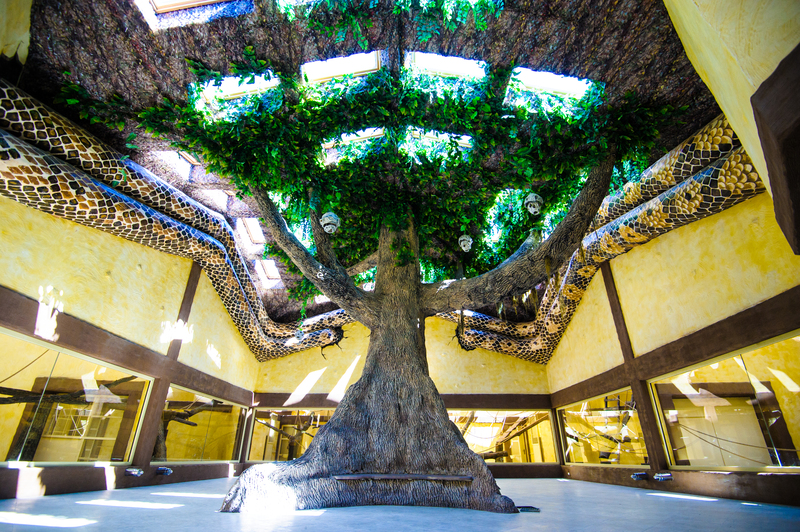
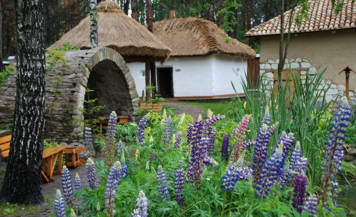

|
Розташована в басейні середньої течії Дніпра, більшою частиною на Правобережжі. На сході межує з Чернігівською і Полтавською, на південному сході та півдні з Черкаською, на південному заході — з Вінницькою, на заході — з Житомирською областями, на півночі — з Гомельською областю Білорусі.
|  |
Зоопарк 12 місяців Зоопарк «ХІІ місяців» - це перше та єдине сучасне українське село щасливих тварин, де гості можуть їх відвідати. І під час вашого перебування до вас будуть ставитись як до наших найдорожчих гостей при кожному відвідуванні нас. Теги: Природа, Цікаві місця для розваг Посилання на офіційний сайт |
|  |
Комплекс "Українське село" Головною метою створення Етнографічного комплексу "Українське село" є прагнення відродження у пересічного українця любові до свого українського духовного коріння: віри, народу, держави, культури та побуту. Неодноразово, наш народ піддавався різноманітним утискам з боку одних або інших ворогів, яких поєднувала єдина мета - вони прагнули нас поневолити. Теги: Природа, Історичні пам'ятки Посилання на офіційний сайт |